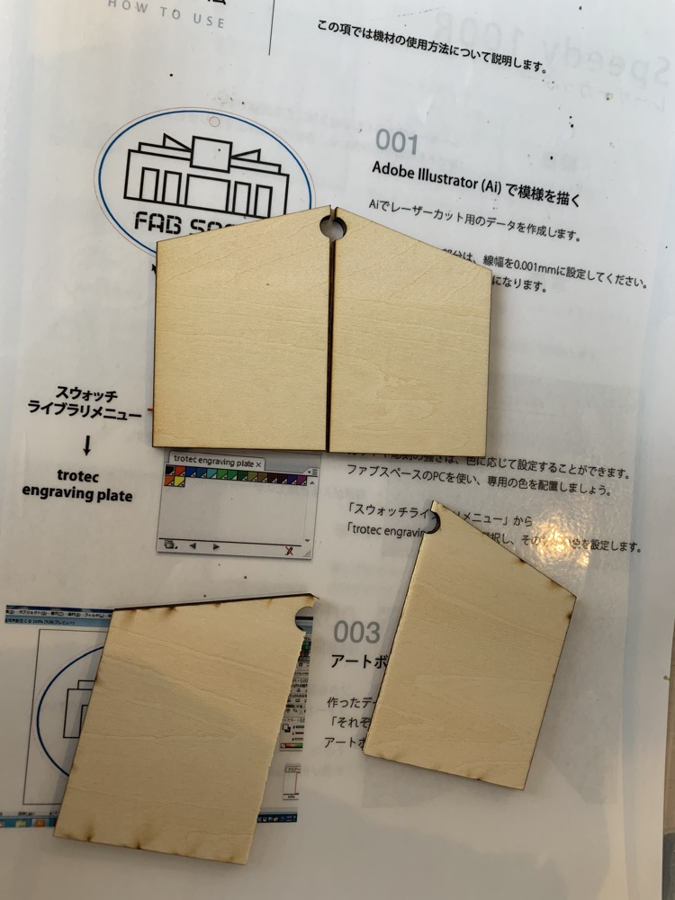

競争願理主義

慶應SFCものづくりサークル Art&Technology に所属する5人によって構成されたteam「stst」で制作した作品。
に所属する5人によって構成されたteam「stst」で制作した作品。
2019年7月14日に岩手県で開催された「アート＆テクノロジー東北2019 」に出展した。
」に出展した。
作品概要


人の願いを破り自分の願いを掲げる、という行為が繰り返されることで、七夕の笹には、選ばれた願いのみが掲げられ、壊された願いは、選ばれた願いの栄養となる。
いくらでも願いを掲げられる七夕の裏にも、人よりも自分の願いを叶えて欲しいという思いがある。
その思いを強く体感させる事で、体験者に破壊について振り返らせると共に、人々の思いから創り出される七夕の神による願いの淘汰を作品の中に見る。
体験の流れ
① 絵馬に自分の願いを書く
② 破る絵馬を選ぶ
③ 絵馬を破る
④ 空いたクリップに自分の絵馬を掲げる
実装

絵馬が2つに割れるように堀の深さを調節して、レーザーカッターで絵馬を出力した。
絵馬のサイズに合わせた返しをつけたクリップを設計して3Dプリンターで出力する事で、２つに割らなければ絵馬がクリップから取れないようにした。
竹を組み合わせて自立するようにし、割った絵馬をいれるboxを作成した。
©
2020 Keisuke Okazaki